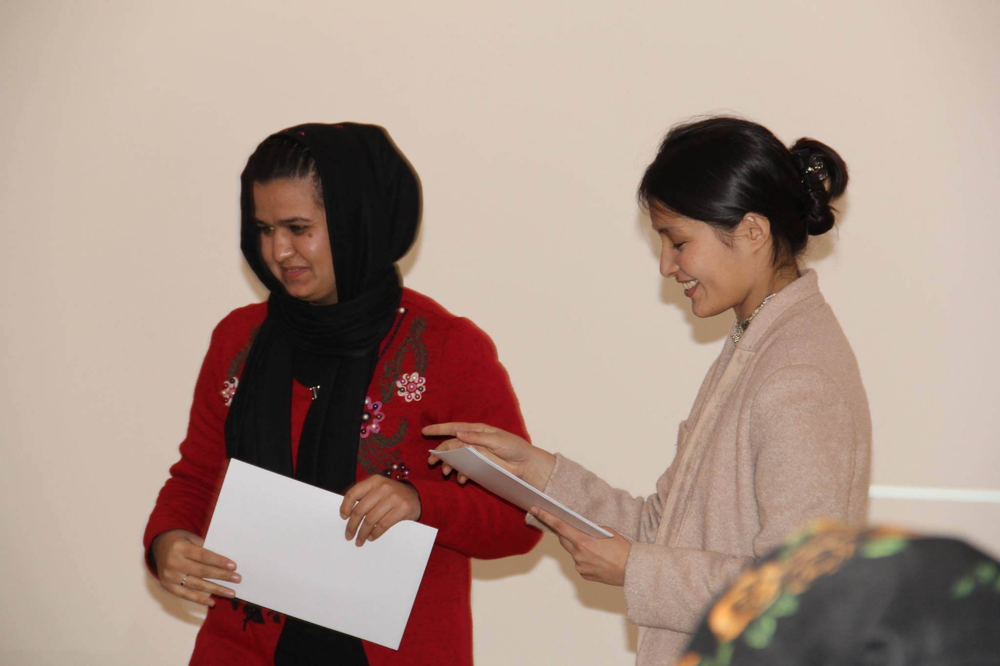
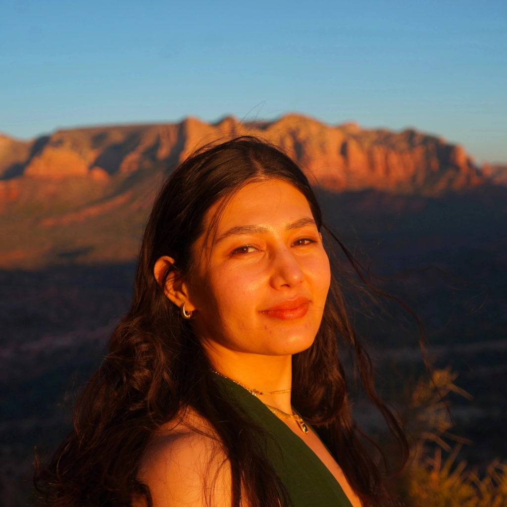
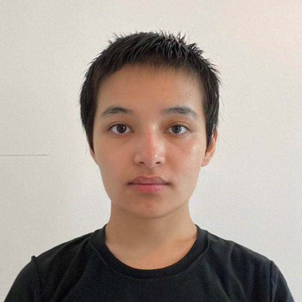

Distribution report
2025Published February 24, 2026
Published report
Medical care, school costs, and daily expenses
Support for seven families, including medical care, education, food, and daily essentials.
Read the 2025 report
Grassroots support · Afghanistan
Dost is a grassroots nonprofit dedicated to women’s education and meeting basic needs in Afghanistan. We connect donations with food, medical care and education support for people in need.
U.S. 501(c)(3) nonprofit · Public records since 2018
2018–2026 · Our reporting history
Explore all 9 years · Reports, updates and campaign records
Distribution report
2025Published February 24, 2026
Published report
Support for seven families, including medical care, education, food, and daily essentials.
Read the 2025 reportReport to add
2024Report not yet available
Awaiting publication
This report has not yet been added to the public archive. Contact Dost for information about this year’s work.
View the record status2025 report. 1 of 2.
Original reports and earlier years are available in the full archive. Download summaries for offline reference.
Download report summariesPhotographs & video
Photographs and video from our work in Afghanistan, organized by year.
Year not yet confirmed
A class with an instructor and participants using notebooks and laptops. From Dost’s teaching archive.
01 / 05Women learning together
Explore the year beneath each photograph or video. Undated material is identified as part of the earlier archive.
Our work
Teaching activities and support with education costs, with a particular commitment to women’s learning.
Explore the teaching archiveFood packages, groceries and financial assistance to help families meet essential household needs.
Read a distribution reportFinancial assistance with treatment, medication and other medical expenses.
Read about medical supportDost is a grassroots U.S. nonprofit committed to women’s education and helping families meet basic needs in Afghanistan.
Our purpose is to get support to people who need it. Local coordination connects donors’ contributions with food, medical care and education costs, according to the needs of each household.
Our published record begins in 2018. Annual updates document the assistance provided, with links to the original accounts.
Our leadershipHow we work
Our Country Coordinator, Ahmad Zia Arman, receives donated funds in Afghanistan and coordinates their distribution to people in need.
Contributions fund food or financial assistance. Previous distributions have helped with groceries, treatment, medication, school fees and household expenses.
Read the latest distribution report →Our Country Coordinator reports back to Dost on the distribution of assistance. Published updates describe contributions, reported costs and how support was used.
Browse reports and financial details →Get involved
Individual giving and community events support Dost’s work. Our annual Ramadan appeal brings donors together in San Francisco and online.
Explore past gatherings and campaign information.
About the organization
Meet the people behind Dost. Select a profile to read about their background and role.

Executive Director
Read profileCountry Coordinator · Afghanistan
Read profile
Chief Technology Officer
Read profileDost is a 501(c)(3) nonprofit organization. Organization documents and donation receipts can be requested from the team.
Contact DostDonor information
Donate through Dost’s Givebutter campaign. Payment is completed on Givebutter. Our annual reports provide examples of how previous contributions have been used.
Contributions support food assistance, medical expenses, education and household needs. Fundraising and transaction costs may apply; the 2025 distribution report separates reported expenses from family support.
The archive includes annual reports, fundraising updates and campaign records, with original-source links and downloadable documents. Each year indicates whether its report is available or still to be added. Browse the archive.
Contact Dost to request organization documents. For receipt questions, include your donation date and the email address used to donate.
Support our work
Your contribution supports food, medical care and education costs
for families in Afghanistan.
The Dost team
Executive Director
Sara Daqiq brings a background in teaching, software engineering and technical leadership to her role as Dost’s Executive Director. Her experience spans privacy technology, API platforms and curriculum development.
She has held software architecture and senior engineering roles, with experience at Uber, Okta and Harvard Extension School. Her work combines building technology with making technical subjects accessible to learners.
At Dost, that combination of education and technology informs a commitment to women’s learning and support for families in Afghanistan.
The Dost team
Country Coordinator · Afghanistan
Ahmad Zia Arman coordinates Dost’s work in Afghanistan. He receives donated funds sent for local assistance, coordinates their distribution to people in need, and reports back to the organization on how support is delivered.
His role connects local distribution with Dost’s organizing team, keeping the receipt of funds, delivery of assistance and reporting connected.
The Dost team
Chief Technology Officer
Shakiba Daqiq brings experience in programming, teaching and community education to her role as Dost’s Chief Technology Officer.
Her academic background includes computer science at Wellesley College and coursework at MIT. During her studies, she taught programming to students in Afghanistan and worked with local coordinators on classes and the distribution of funds.
As a founding engineer of Afghan Girls Build, she helped establish a programming boot camp that supported students in building projects and pursuing internships. Her work also includes mentoring aspiring technologists.